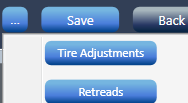
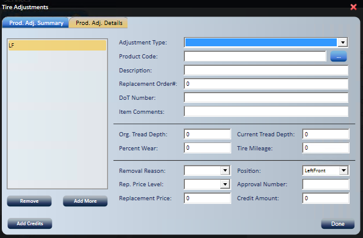

Tire Adjustment
Use Tire Adjustment to give a customer credit for an adjusted tire against the sale of the replacement tires. The adjustment details are stored with the service request.
- Start a new Service Request.
- Select the customer and vehicle as usual.

- Add the replacement tires as usual.
- From the overflow menu, select Tire Adjustments.

- Select Add More to show a tire position on the Prod. Adj. Detail tab.
- By default, it shows LF (Left Front). This changes once you select the position.
- Select the Adjustment Type.
- Select the Product Code from the ellipsis.
- The customer's service history shows.
- Make your selection, then select Done.
- Enter the DoT Number of the tire being adjusted (up to 15 characters).
- Enter item comments if needed.
- Enter the original tread depth.
- Enter the current tread depth.
- Percentage Wear is calculated from the tread depth and mileage data you enter.
- Enter the tire mileage.
- Select the Removal Reason from the drop-down.
- Select the Position.
- Select the Replacement Price Level.
- Enter the Approval Number.
- Enter the Replacement Price.
- Credit Amount is calculated from the Percent Wear field.
- Select Done.
- All the information is stored with the service request.
- Select from either tab.
- A credit package is added to the service request to offset the sale of the new product.
Return adjusted tires to the manufacturer
Adjusted tires waiting to go back to the manufacturer are listed on the Home screen Purchases tab under Tire Adjustment Credits.
- Select the items, then select Create Return to start a return purchase order, or Put Away to keep them and remove them from the list.
- Items clear from the list once their return is processed.